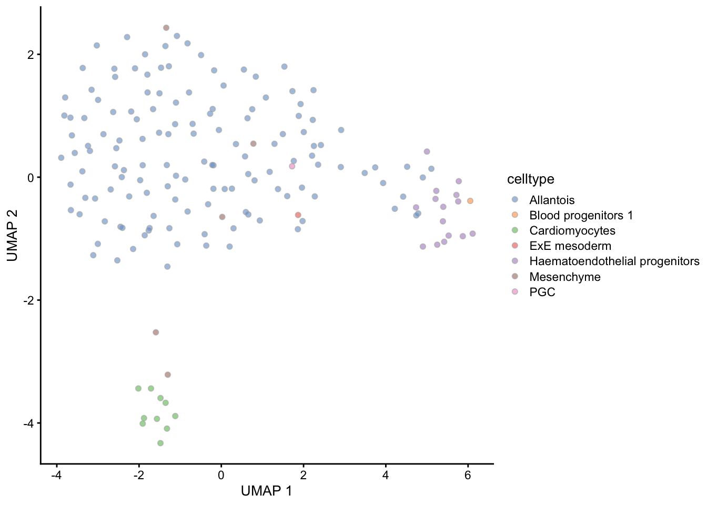

Last updated: 2020-04-19
Checks: 6 1
Knit directory: allantois/
This reproducible R Markdown analysis was created with workflowr (version 1.6.1). The Checks tab describes the reproducibility checks that were applied when the results were created. The Past versions tab lists the development history.
The R Markdown is untracked by Git. To know which version of the R Markdown file created these results, you’ll want to first commit it to the Git repo. If you’re still working on the analysis, you can ignore this warning. When you’re finished, you can run wflow_publish to commit the R Markdown file and build the HTML.
Great job! The global environment was empty. Objects defined in the global environment can affect the analysis in your R Markdown file in unknown ways. For reproduciblity it’s best to always run the code in an empty environment.
The command set.seed(20200318) was run prior to running the code in the R Markdown file. Setting a seed ensures that any results that rely on randomness, e.g. subsampling or permutations, are reproducible.
Great job! Recording the operating system, R version, and package versions is critical for reproducibility.
Nice! There were no cached chunks for this analysis, so you can be confident that you successfully produced the results during this run.
Great job! Using relative paths to the files within your workflowr project makes it easier to run your code on other machines.
Great! You are using Git for version control. Tracking code development and connecting the code version to the results is critical for reproducibility.
The results in this page were generated with repository version 7374fbe. See the Past versions tab to see a history of the changes made to the R Markdown and HTML files.
Note that you need to be careful to ensure that all relevant files for the analysis have been committed to Git prior to generating the results (you can use wflow_publish or wflow_git_commit). workflowr only checks the R Markdown file, but you know if there are other scripts or data files that it depends on. Below is the status of the Git repository when the results were generated:
Ignored files:
Ignored: .DS_Store
Ignored: .Rhistory
Ignored: .Rproj.user/
Ignored: analysis/.DS_Store
Ignored: data/.DS_Store
Ignored: output/.DS_Store
Untracked files:
Untracked: Rplot.png
Untracked: analysis/01-allantois-correction.Rmd
Untracked: analysis/02-atlas-integration.Rmd
Untracked: analysis/02-samples-comparisons.Rmd
Untracked: analysis/03-trajectory-analysis.Rmd
Untracked: analysis/04-atlas-selection.Rmd
Untracked: analysis/05-trajectory-analysis.Rmd
Untracked: analysis/XX-test-document.Rmd
Untracked: analysis/cache/
Untracked: code/SlingshotDynverse.R
Untracked: code/atlas-plots.R
Untracked: code/batch-corrected.R
Untracked: code/batch-umap.R
Untracked: code/batch-uncorrected.R
Untracked: code/celltype-corrected.R
Untracked: code/celltype-umap.R
Untracked: code/celltype-uncorrected.R
Untracked: code/scratch.R
Untracked: data/01-allantois-correction.rds
Untracked: data/02-atlas-integration.rds
Untracked: data/02-gastrulation-integration.rds
Untracked: data/04-atlas-selection.rds
Untracked: data/allantois-kdr.rds
Untracked: data/allantois-wt.rds
Untracked: output/atlas-batch.pdf
Untracked: output/atlas-batch.png
Untracked: output/atlas-celltype-2.png
Untracked: output/atlas-celltype.png
Untracked: output/atlas-kmeans.png
Untracked: output/atlas-label.png
Untracked: output/atlas-subset.pdf
Untracked: output/atlas-subset.png
Untracked: output/batch-corrected.pdf
Untracked: output/batch-umap.pdf
Untracked: output/batch-uncorrected.pdf
Untracked: output/celltype-corrected.pdf
Untracked: output/celltype-umap.pdf
Untracked: output/celltype-uncorrected.pdf
Untracked: output/correlate-etv2.png
Untracked: output/heatmap.png
Untracked: output/kmeans-cluster.pdf
Untracked: output/plot.pdf
Untracked: output/sleepwalk.html
Untracked: output/slingshot-gene.png
Untracked: output/slingshot-heatmap.png
Untracked: output/slingshot-pseudotime.png
Untracked: output/slingshot-trajectory-cell.pdf
Untracked: output/slingshot-trajectory-cluster.pdf
Untracked: output/slingshot-trajectory.pdf
Unstaged changes:
Modified: _workflowr.yml
Modified: analysis/_site.yml
Note that any generated files, e.g. HTML, png, CSS, etc., are not included in this status report because it is ok for generated content to have uncommitted changes.
There are no past versions. Publish this analysis with wflow_publish() to start tracking its development.
Set chunk options:
knitr::opts_chunk$set(
autodep = TRUE,
cache = TRUE,
cache.path = "cache/01-allantois-correction.Rmd/",
cache.lazy = FALSE,
dev = "png",
error = FALSE,
message = FALSE,
warning = FALSE
)Load required packages:
pkg <- c("BiocParallel", "SingleCellExperiment", "scater", "scran", "uwot", "Rtsne", "batchelor", "patchwork", "EnsDb.Mmusculus.v79", "org.Mm.eg.db", "msigdbr")
lib <- lapply(pkg, library, character.only = TRUE)Read processed experiment data:
sce1 <- readRDS("data/allantois-wt.rds")
sce2 <- readRDS("data/allantois-kdr.rds")Extract original experiment data:
alt1 <- altExp(sce1, "original", withColData = TRUE)
alt2 <- altExp(sce2, "original", withColData = TRUE)Make cell names unique across experiments:
colnames(alt1) <- paste0("allantois-wt-", seq_len(ncol(alt1)))
colnames(alt2) <- paste0("allantois-kdr-", seq_len(ncol(alt2)))Make feature names compatible across experiments:
rownames(alt1) <- rowData(alt1)$gene_id
rownames(alt2) <- rowData(alt2)$gene_idMake altExp compatible across experiments:
altExp(alt1, "ERCC") <- NULL
altExp(alt2, "ERCC") <- NULLCollect variance modelling statistics:
dec1 <- metadata(alt1)$modelGeneVarWithSpikes
dec2 <- metadata(alt2)$modelGeneVarWithSpikesMake features names compatible across experiments:
rownames(dec1) <- rowData(alt1)$gene_id
rownames(dec2) <- rowData(alt2)$gene_idIdentify common feature names across experiments:
ids1 <- rownames(dec1)
ids2 <- rownames(dec2)
ids <- intersect(ids1, ids2)Combine variance modelling results from both studies:
dec1 <- dec1[ids, ]
dec2 <- dec2[ids, ]
dec <- combineVar(dec1, dec2)
rownames(dec) <- idsFilter Xist gene from list of features:
hvg <- rownames(dec)
lgl <- hvg == "ENSMUSG00000086503" # Xist
hvg <- hvg[!lgl]Filter Y chromosome genes from list of features:
ids <- keys(EnsDb.Mmusculus.v79, keytype = "GENEID", filter = SeqNameFilter("Y"))
lgl <- hvg %in% ids
hvg <- hvg[!lgl]Filter MT chromosome genes from list of features:
ids <- keys(EnsDb.Mmusculus.v79, keytype = "GENEID", filter = SeqNameFilter("MT"))
lgl <- hvg %in% ids
hvg <- hvg[!lgl]Filter cell-cycle genes from list of features:
org <- select(org.Mm.eg.db, keys = "GO:0007049", keytype = "GOALL", column = "ENSEMBL")
lgl <- hvg %in% org$ENSEMBL
hvg <- hvg[!lgl]Filter ribosomal genes from list of features:
ids <- select(EnsDb.Mmusculus.v79, keys = keys(EnsDb.Mmusculus.v79), columns = c("GENEID", "GENENAME"), keytype = "GENEID")
sig <- msigdbr(species = "Mus musculus", category = "C2")
sig <- subset(sig, gs_name == "KEGG_RIBOSOME")
org <- select(org.Mm.eg.db, keys = sig$gene_symbol, keytype = "SYMBOL", column = "ENSEMBL")
lgl <- hvg %in% org$ENSEMBL
hvg <- hvg[!lgl]Select features for batchelor integration:
hvg <- getTopHVGs(dec[hvg, ], prop = 0.1)Define a set of markers to use for correction:
res1 <- pairwiseWilcox(logcounts(alt1), alt1$cluster, direction = "up")
sig1 <- getTopMarkers(res1$statistics, res1$pairs, n = 10)
res2 <- pairwiseWilcox(logcounts(alt2), alt2$cluster, direction = "up")
sig2 <- getTopMarkers(res2$statistics, res2$pairs, n = 10)
ids <- unique(unlist(c(unlist(sig1), unlist(sig2))))
hvg <- ids[ids %in% hvg]Identify common feature names across experiments:
ids1 <- rownames(alt1)
ids2 <- rownames(alt2)
ids <- intersect(ids1, ids2)Subset experiments to common universe of features:
alt1 <- alt1[ids, ]
alt2 <- alt2[ids, ]Per-batch scaling normalization:
out <- multiBatchNorm("allantois-wt" = alt1, "allantois-kdr" = alt2, norm.args = list(use_altexps = FALSE))
alt1 <- out[["allantois-wt"]]
alt2 <- out[["allantois-kdr"]]Combine experiments with no correction:
all <- correctExperiments("allantois-wt" = alt1, "allantois-kdr" = alt2, PARAM = NoCorrectParam())Calculate PCA reduced dimensions:
set.seed(1101011110)
all <- runPCA(all, subset_row = hvg)Create PCA plot coloured by batch:
plotPCA(all, colour_by = "batch")Create PCA plot coloured by celltype:
plotPCA(all, colour_by = "celltype")Calculate UMAP reduced dimensions:
set.seed(1101011110)
all <- runUMAP(all, dimred = "PCA")Create UMAP plot coloured by batch:
plotUMAP(all, colour_by = "batch")Create UMAP plot coloured by celltype:
plotUMAP(all, colour_by = "celltype")Perform fast mutual nearest neighbors correction:
set.seed(1010111011)
mnn <- correctExperiments(all, batch = all$batch, subset.row = hvg, correct.all = TRUE)Check proportion of lost variance to ensure genuine biological heterogeneity is not being removed:
metadata(mnn)$merge.info$lost.var allantois-kdr allantois-wt
[1,] 0.03156369 0.01517047Create MNN plot coloured by batch:
plotReducedDim(mnn, "corrected", colour_by = "batch")Create MNN plot coloured by celltype:
plotReducedDim(mnn, "corrected", colour_by = "celltype")Calculate UMAP using different parameters:
num <- c(5, 15, 30, 50, 100)
dst <- c(0, 0.01, 0.05, 0.1, 0.5, 1)
arg <- expand.grid(n_neighbors = num, min_dist = dst)
funUMAP <- function(x, dimred, n_neighbors, min_dist) {
set.seed(1011101101)
runUMAP(x, dimred = dimred, n_neighbors = n_neighbors, min_dist = min_dist)
}
run <- mapply(
FUN = funUMAP,
n_neighbors = arg$n_neighbors,
min_dist = arg$min_dist,
MoreArgs = list(x = mnn, dimred = "corrected"),
SIMPLIFY = FALSE
)Select optimal UMAP parameters:
set.seed(1011101101)
mnn <- runUMAP(mnn, dimred = "corrected", n_neighbors = 30, min_dist = 0.5)Create UMAP plot coloured by batch:
plotUMAP(mnn, colour_by = "batch")Create UMAP plot coloured by celltype:
plotUMAP(mnn, colour_by = "celltype")
Write experiment object to a file:
saveRDS(mnn, file = "data/01-allantois-correction.rds")Print version information about R, the OS and attached or loaded packages:
sessionInfo()R version 3.6.3 (2020-02-29)
Platform: x86_64-apple-darwin15.6.0 (64-bit)
Running under: macOS Catalina 10.15.4
Matrix products: default
BLAS: /Library/Frameworks/R.framework/Versions/3.6/Resources/lib/libRblas.0.dylib
LAPACK: /Library/Frameworks/R.framework/Versions/3.6/Resources/lib/libRlapack.dylib
locale:
[1] en_GB.UTF-8/en_GB.UTF-8/en_GB.UTF-8/C/en_GB.UTF-8/en_GB.UTF-8
attached base packages:
[1] parallel stats4 stats graphics grDevices utils datasets
[8] methods base
other attached packages:
[1] msigdbr_7.0.1 org.Mm.eg.db_3.10.0
[3] EnsDb.Mmusculus.v79_2.99.0 ensembldb_2.10.2
[5] AnnotationFilter_1.10.0 GenomicFeatures_1.38.2
[7] AnnotationDbi_1.48.0 patchwork_1.0.0
[9] batchelor_1.2.4 Rtsne_0.15
[11] uwot_0.1.8 Matrix_1.2-18
[13] scran_1.14.6 scater_1.14.6
[15] ggplot2_3.3.0 SingleCellExperiment_1.8.0
[17] SummarizedExperiment_1.16.1 DelayedArray_0.12.3
[19] matrixStats_0.56.0 Biobase_2.46.0
[21] GenomicRanges_1.38.0 GenomeInfoDb_1.22.1
[23] IRanges_2.20.2 S4Vectors_0.24.4
[25] BiocGenerics_0.32.0 BiocParallel_1.20.1
[27] workflowr_1.6.1
loaded via a namespace (and not attached):
[1] ggbeeswarm_0.6.0 colorspace_1.4-1 ellipsis_0.3.0
[4] rprojroot_1.3-2 XVector_0.26.0 BiocNeighbors_1.4.2
[7] fs_1.4.1 farver_2.0.3 bit64_0.9-7
[10] RSpectra_0.16-0 fansi_0.4.1 codetools_0.2-16
[13] knitr_1.28 Rsamtools_2.2.3 dbplyr_1.4.2
[16] compiler_3.6.3 httr_1.4.1 dqrng_0.2.1
[19] backports_1.1.6 assertthat_0.2.1 lazyeval_0.2.2
[22] limma_3.42.2 cli_2.0.2 later_1.0.0
[25] BiocSingular_1.2.2 htmltools_0.4.0 prettyunits_1.1.1
[28] tools_3.6.3 rsvd_1.0.3 igraph_1.2.5
[31] gtable_0.3.0 glue_1.4.0 GenomeInfoDbData_1.2.2
[34] dplyr_0.8.5 rappdirs_0.3.1 Rcpp_1.0.4
[37] vctrs_0.2.4 Biostrings_2.54.0 rtracklayer_1.46.0
[40] DelayedMatrixStats_1.8.0 xfun_0.13 stringr_1.4.0
[43] lifecycle_0.2.0 irlba_2.3.3 statmod_1.4.34
[46] XML_3.99-0.3 edgeR_3.28.1 zlibbioc_1.32.0
[49] scales_1.1.0 hms_0.5.3 promises_1.1.0
[52] ProtGenerics_1.18.0 yaml_2.2.1 curl_4.3
[55] memoise_1.1.0 gridExtra_2.3 biomaRt_2.42.1
[58] stringi_1.4.6 RSQLite_2.2.0 rlang_0.4.5
[61] pkgconfig_2.0.3 bitops_1.0-6 evaluate_0.14
[64] lattice_0.20-41 purrr_0.3.3 labeling_0.3
[67] GenomicAlignments_1.22.1 cowplot_1.0.0 bit_1.1-15.2
[70] tidyselect_1.0.0 magrittr_1.5 R6_2.4.1
[73] DBI_1.1.0 pillar_1.4.3 withr_2.1.2
[76] RCurl_1.98-1.1 tibble_3.0.0 crayon_1.3.4
[79] BiocFileCache_1.10.2 rmarkdown_2.1 viridis_0.5.1
[82] progress_1.2.2 locfit_1.5-9.4 grid_3.6.3
[85] FNN_1.1.3 blob_1.2.1 git2r_0.26.1
[88] digest_0.6.25 httpuv_1.5.2 openssl_1.4.1
[91] munsell_0.5.0 beeswarm_0.2.3 viridisLite_0.3.0
[94] vipor_0.4.5 askpass_1.1